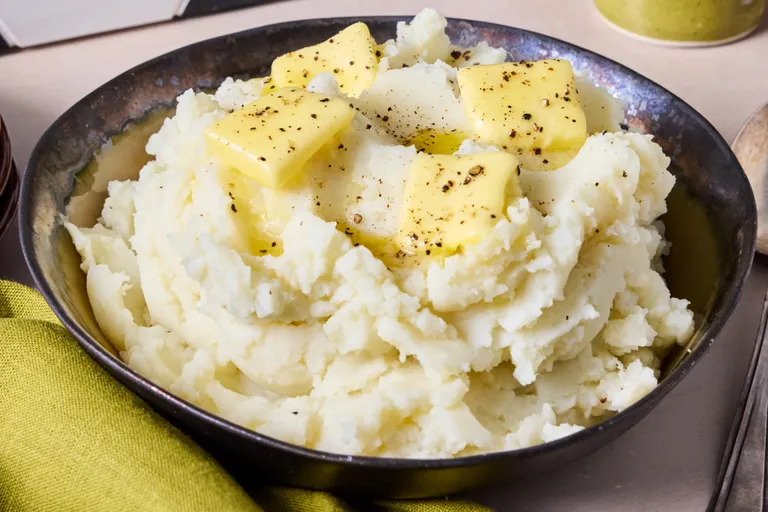

Home
Mashed Potatoes recipe

The best mashed potatoes are smooth, creamy, and buttery. This is my favorite recipe,
made with russet potatoes, warm milk, and melted butter for light, fluffy results every time. Its a classic side dish for the holidays or weeknight dinners
| Preparation Time |
15 mins |
| Cook Time |
15 mins |
| Total Time |
30 mins |
| Servings |
4 |
Ingredients
- 2 pounds russet potatoes, peeled and cut into 2-inch chunks
- 3 cloves garlic, peeled, or to taste
- 1 cup milk
- 2 tablespoons butter
- salt and ground black pepper to taste
Instructions
- Gather all ingredients.
- Bring a large pot of salted water to a boil. Add potatoes and garlic, if using: reduce the heat to medium and simmer until potatoes are easily pierced with a fork, about 15 minutes.
- When the potatoes are almost finished, heat milk and butter in a small saucepan over low heat until butter is melted.
- Drain potatoes and garlic well; return to the hot pot for 1 to 2 minutes to remove excess moisture. Gradually add the warm milk mixture while mashing until smooth and creamy, using only as much as needed to reach your desired consistency.
- Season with salt and pepper. Serve topped with extra butter, if desired.